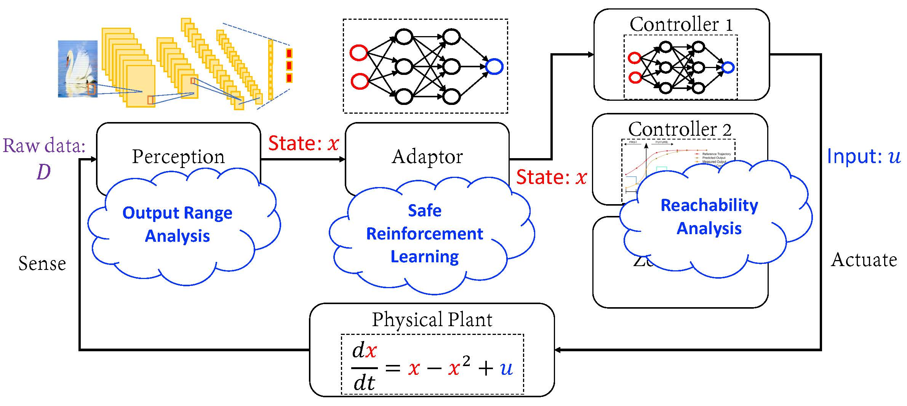

Chao Huang
 |
Hi, welcome to my page! I'm a postdoc fellow in the ECE department at Northwestern University, supervised by Prof. Qi Zhu. My research interests include design and verification of various cyber physical systems, e.g. hybrid systems, neural-network controlled systems. Prior to Northwestern, I received my B.S. and PhD in mathematics and applied mathematics and computer science from Nanjing University respectively. I also visited the Department of Computer Science at Aalborg University and was pleased to work with Prof. Kim G. Larsen.
Department of Electrical and Computer Engineering, |
Recent News
2020.10 Our paper Cross-Layer Design of Automotive Systems has been accepted by IEEE Design & Test.
2020.10 Our paper ARCH-COMP20 Category Report: Artificial Intelligence and Neural Network Control Systems (AINNCS) for Continuous and Hybrid Systems Plants has been accepted by ARCH-COMP 2020
2020.10 Our paper Energy-Efficient Control Adaptation with Safety Guarantees for Learning-Enabled Cyber-Physical Systems has been selected as one of the best paper candidates of ICCAD 2020.
2020.09 I will give an invited talk Towards Safety in Learning-enabled Systems: Verification and Design on FROM 2020 on Sep. 4th.
2020.08 Our paper Know the Unknowns: Addressing Disturbances and Uncertainties in Autonomous Systems (Invited Paper) has been accepted by ICCAD 2020.
2020.08 Our paper Efficient System Verification with Multiple Weakly-Hard Constraints for Runtime Monitoring has been accepted by RV 2020.
2020.07 Our paper Energy-Efficient Control Adaptation with Safety Guarantees for Learning-Enabled Cyber-Physical Systems has been accepted by ICCAD 2020.
2020.07 Our paper Divide and Slide: Layer-Wise Refinement for Output Range Analysis of Deep Neural Networks has been accepted by EMSOFT 2020 and will be published in the IEEE Transactions on Computer-Aided Design of Integrated Circuits and Systems (TCAD).
2020.07 Our paper ReachNN*: A Tool for Reachability Analysis of Neural-Network Controlled Systems has been accepted by ATVA 2020.
2020.04 Our paper SAW: A Tool for Safety Analysis of Weakly-hard Systems has been accepted by CAV 2020. See you in Los Angeles, CA this July!
2020.02 Our paper Opportunistic Intermittent Control with Safety Guarantees for Autonomous Systems has been accepted by DAC 2020. See you in San Francisco, CA this July!
Projects
Design and Verification of Learning-Enabled Systems
|  | Learning-enabled systems have been receiving numerous attractions from both academia and industry due to promising applications. They often leverage machine learning techniques in their perception of the environment, and increasingly also in the consequent decision making process for planning, navigation, control, etc. With no doubt, safety is one of the key issues before such systems are applied in practice. In this project, we conduct research on safety verification and design of learning-enabled systems with respect to perception, adaptation and control. We also develop tools for demonstration. Details of this project can be found in the project page. |
Verification of Weakly-hard Systems
 |
Timing uncertainty is one major type of uncertainty during the operation of autonomous systems, i.e., how much time it takes for certain function to complete and whether that meets the deadline. We consider the weakly-hard systems, where deadline misses are allowed in a bounded manner. A common example is that such deadline misses are described by (m,K) constraints, which simply specifies that among any K consecutive executions, at most m instances can miss their execution deadlines.. One of the most important functional properties is safety. In our weakly-hard framework, we consider whether the system with (m,K) constraints will ever enter a pre-specified unsafe state set (see the figure below). We develop several approaches to formally verify the safety of weakly-hard systems. We also develop tools for demonstration. Details of this project can be found in the project page. |
Education
Nanjing University: PhD, Computer science, 2011 - 2018
Nanjing University: B.S., Mathematics, 2007 - 2011
Work
Northwestern University, Evanston: Postdoc fellow, ECE, 2018 - present